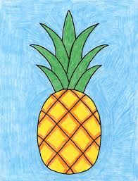

The color property is used to set the color of the text.
Static Position
Relative Position
Fixed Position
Absolute Position
The pineapple (Ananas comosus) is a tropical plant with an edible fruit; it is the most economically significant plant in the family Bromeliaceae.
 The pineapple is indigenous to South America, where it has been cultivated for many centuries. The introduction of the pineapple plant to Europe in the 17th century made it a significant cultural icon of luxury. Since the 1820s, pineapple has been commercially grown in greenhouses and many tropical plantations.